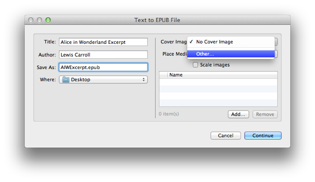
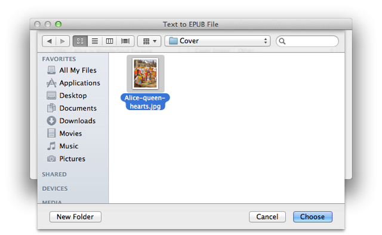
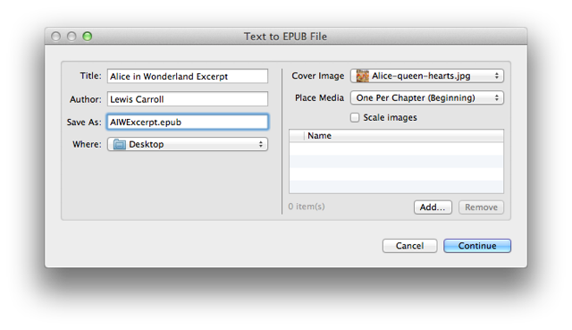
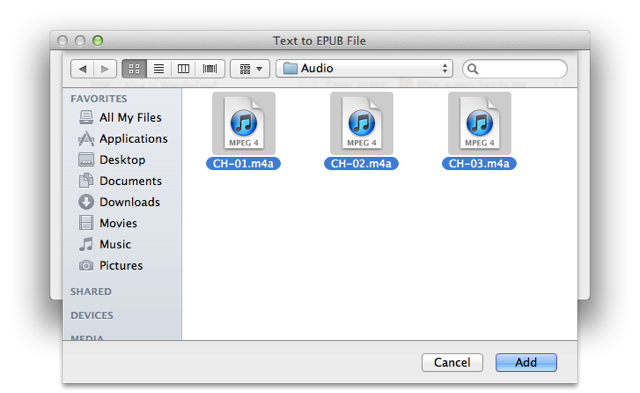
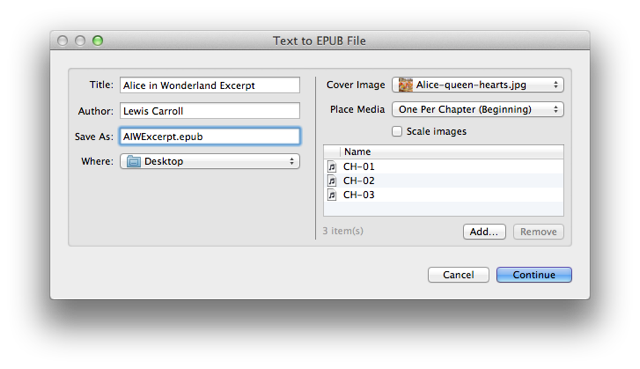
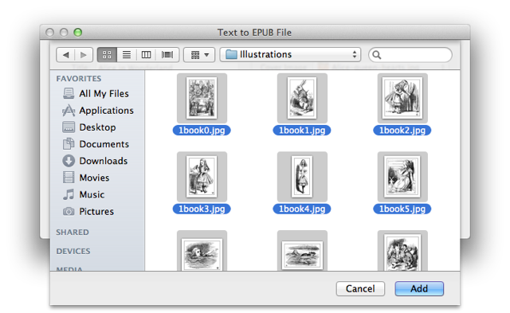
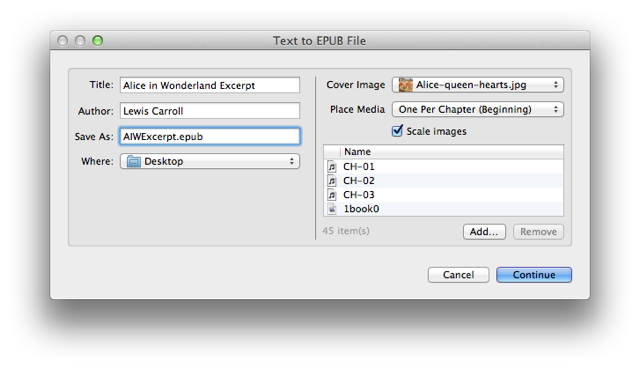

EPUB books created with the Text to EPUB action can optionally contain images, audio files, and video files. In the following steps, you will add media to the EPUB book.
DO THIS ►Add a cover image to the publication by selecting "Other…" from the cover image popup menu on the right side of the dialog:

DO THIS ►In the forthcoming choose dialog sheet, navigate to the Cover folder in the Demo Kit and select the cover image, then click the Choose button to add the cover image.:

Next, you’ll add add the audio clips to the book. By default, one media item (image, audio file, or video file) will be inserted at the beginning (or end) of each chapter. Since there are three chapters, we'll add three corresponding audio files, which will be inserted one per chapter.
DO THIS ►Set the value for the “Place Media” popup menu to be “One Per Chapter (Beginning)”:

DO THIS ►Next, click the "Add…" button beneath the media list area (⬆ see above ) to summon a dialog for selecting media files. Navigate to the Audio folder, and select the three provided audio clips, then click the "Add" button (⬇ see below ) to add the selected audio clips to the media list:

The selected audio clips have been added to the media list: (⬇ see below )

Next, we’ll add the illustrations to the media list. By default, the action will place any media not assigned to a chapter, in a chapter at the end of the book named "Illustrations."
DO THIS ►Click the "Add…" beneath the media list (⬇ see below ) to summon the picker dialog, then navigate the the Illustrations folder in the demo kit, select all the illustration images, and Click the "Add" button:

As an option, you can choose to have the action scale large images to a smaller size.
DO THIS ►Select the “Scale Images” checkbox: (⬇ see below )

All the book components have beed identified, settings applied, and the book is ready to be constructed.
DO THIS ►Click the "Continue" button (⬆ see above ) to begin the construction of the digital book.
A temporary folder containing the components of the book will be created in the indicated destination folder. Once the processing of the book items has completed, the folder will be converted into an EPUB document, which is ready to be added to iTunes and then transfered to your iPad.